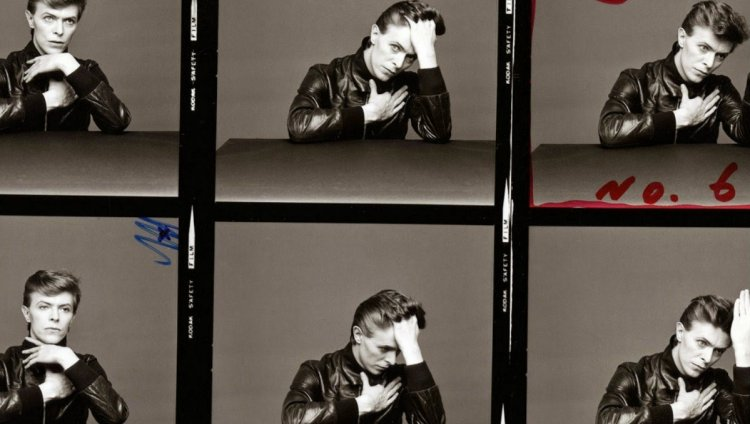

La mitomanía musical de David Bowie se materializó en disco con la publicación de “Pin Ups” (1973), un LP en el que versionó temas de algunos de sus grupos favoritos de los años 60 como The Who (“I can’t explain”, “Anyway, anyhow, anywhere”), The Mojos (“Everything’s alright”), The Kinks (“Where have all the good times gone”), The Easybeats (“Friday On My Mind”) o Pink Floyd (“See Emily Play”)
En la portada del disco y junto al cantante aparecía la conocida modelo Twiggy.
Tras este trabajo, Bowie se alejó de los escenarios y rompió su colaboración con los Spiders from Mars antes de publicar “Diamond Dogs” (1974), un oscuro álbum censurado en su portada que contenía los sencillos “Rebel Rebel” (número 5 en el Reino Unido), “Diamond Dogs” (número 21), “1984” y “Rock’n’roll With Me”.
El disco, infravalorado en su época, intentó adaptar de manera conceptual la obra de George Orwell “1984”.
Después de este LP se produciría una nueva transformación sónica por parte del camaleónico artista británico, ya que sus nuevos trabajos estarían influenciados por sonidos del soul de Philadelphia que el propio Bowie calificaría con el apelativo de “Plastic Soul”.
Esta mutación se puso de manifiesto por primera vez en su doble álbum en vivo “David Live” (1974), un trabajo en directo con actuaciones en tierra estadounidense en las cuales introducía al guitarrista Carlos Alomar.
Sus fans se sintieron un tanto confundidos con esta metaformosis y añoraban sus discos previos de su etapa glam-rock. A pesar de ello, Bowie enfatizó su período “Plastic Soul” con “Young Americans” (1975), un álbum con sonidos soul y funk producido por Tony Visconti y Harry Maslin en el que brillaba con luz propia el exitoso single “Fame”, un tema compuesto por David Bowie con la ayuda de Alomar y John Lennon que le hizo llegar por primera vez al número 1 en los Estados Unidos.
Entre sus surcos también se encuentran piezas como la versión de los Beatles “Across The Universe”, “Win” o el tema homónimo del álbum.
En el año 1976 y con la publicación de “Station To Station” (1976) Bowie adoptaría una nueva personalidad, creando un personaje al que denominó El Duque Blanco, y realizando uno de los discos más laureados de su carrera con heterogéneos sonidos en base a una amalgama entre rock, soul, funk, art-rock y vanguardia.
Co-producido con Harry Maslin, quien había producido los temas “Fame” y “Across the universe”, el álbum, con el tema estrella “Golden Years”, fue compuesto con un David Bowie totalmente enganchado a las drogas, siendo atacado por su alto consumo de estupefacientes por la mass media británica, quienes también comenzaron a increpar al artista por su simpatía por el nazismo y los fascistas.
Esta querencia política sería contradicha en el futuro, achacando sus declaraciones pretéritas a un efecto alienador de las drogas.

El mismo año de la salida al mercado de “Station to Station”, David debutó como protagonista cinematográfico en el largometraje de Nicolas Roeg “El hombre que cayó a la tierra” (1976).
Esta faceta interpretativa se volvió a repetir en el futuro con títulos como “Gigoló” (1979) de David Hemmings, “El Ansia” (1983) de Tony Scott o “Feliz Navidad, Mr. Lawrence” (1983), film dirigido por Nagisa Oshima.
La publicación del recopilatorio “ChangesonBowie” (1976) puso punto y final a uno de los años más importantes de su trayectoria profesional, preludio de una nueva transformación sonora que le llevó a Berlín.
En la ciudad alemana, Bowie se asociaría con Brian Eno, el antiguo componente de Roxy Music. Junto al inquieto Eno, David experimentó con la música electrónica y ambiental para crear su trilogía berlinesa iniciada por “Low” (1977) y continuada por “Heroes” (1977), disco con el clásico homónimo, y “Lodger” (1979), trabajos de gran resonancia comercial en el Reino Unido que estaban dominados por atmósferas cetrinas y depresivas y sonidos de sintetizadores acompañando a los instrumentos clásicos del rock (en “Heroes” participó Robert Fripp), características que influenciarían notablemente a muchos grupos new wave y post-punk británicos.
Este fin de década resultaría frenético para Bowie. Además de sus discos con Eno, publicaría otro álbum doble en vivo titulado “Stage” (1978) y produciría y ayudaría en la composición a Iggy Pop (quien aparece en “Low”) en la grabación de dos de sus mejores obras en solitario, “The Idiot” y “Lust for life”, ambas aparecidas en 1977.
 En estos inicios Bowie se movía en sonidos mod-pop, folk, R&B y vodevilescos, con influencias de Bob Dylan, Anthony Newley, The Kinks o The Beatles.
En Pye grabó el sencillo “The Laughing Gnome”, número 6 británico en el año 1967.
Ese mismo año apareció su primer LP, “David Bowie” (1967), un disco pop psicodélico y barroco producido por Mike Vernon que no logró cosechar buenos resultados comerciales, lo que derivó en la ruptura del contrato con Deram.
En este período mantuvo un estrecho contacto con Lindsay Kemp y con las religiones orientales tan en boga entre la juventud de finales de los 60.
Estas reflexiones místicas (pasó una temporada en un monasterio budista) y contactos artísticos cambiaron su forma de actuar en escena, adoptando sus instrucciones de mímica y actuación con Kemp como parte de Turquoise, rebautizado como The Feathers, un grupo que había formado con la bailarina Hermione Farthingale (novia de Bowie por aquellos momentos) y el músico John Hutchinson.
Por esa época también comenzó a apreciar a autores de fuerte calado intelectual, como Jacques Brel o Scott Walker, intérpretes y compositores que influyeron en su manera de acometer sus textos.
En 1969 creó un grupo teatral vanguardista denominado Beckenham Arts Lab.
En estos inicios Bowie se movía en sonidos mod-pop, folk, R&B y vodevilescos, con influencias de Bob Dylan, Anthony Newley, The Kinks o The Beatles.
En Pye grabó el sencillo “The Laughing Gnome”, número 6 británico en el año 1967.
Ese mismo año apareció su primer LP, “David Bowie” (1967), un disco pop psicodélico y barroco producido por Mike Vernon que no logró cosechar buenos resultados comerciales, lo que derivó en la ruptura del contrato con Deram.
En este período mantuvo un estrecho contacto con Lindsay Kemp y con las religiones orientales tan en boga entre la juventud de finales de los 60.
Estas reflexiones místicas (pasó una temporada en un monasterio budista) y contactos artísticos cambiaron su forma de actuar en escena, adoptando sus instrucciones de mímica y actuación con Kemp como parte de Turquoise, rebautizado como The Feathers, un grupo que había formado con la bailarina Hermione Farthingale (novia de Bowie por aquellos momentos) y el músico John Hutchinson.
Por esa época también comenzó a apreciar a autores de fuerte calado intelectual, como Jacques Brel o Scott Walker, intérpretes y compositores que influyeron en su manera de acometer sus textos.
En 1969 creó un grupo teatral vanguardista denominado Beckenham Arts Lab.